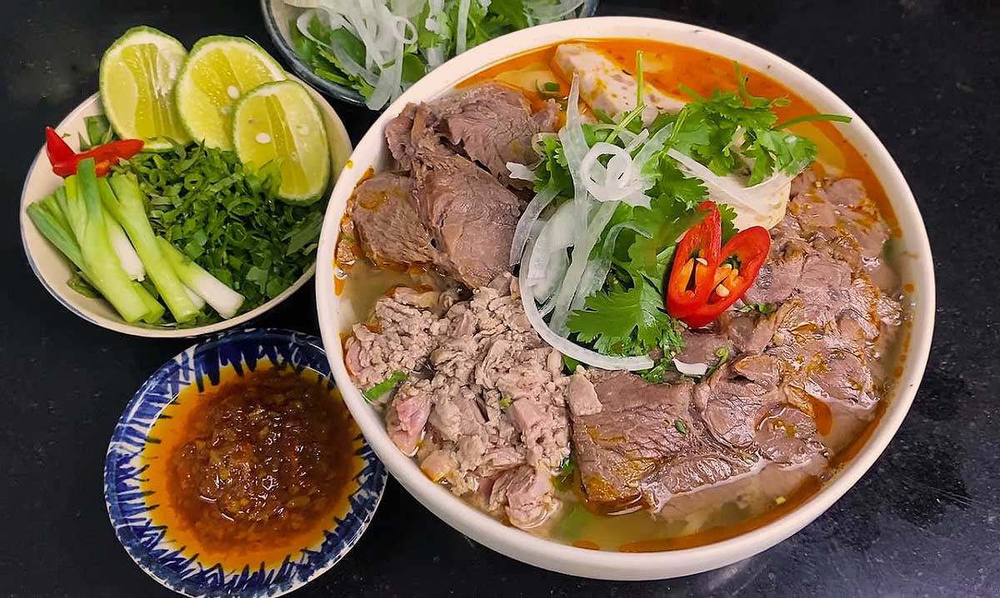

Home
Mon Bun bo Hue

Bun bo Hue is a famous traditional dish origined from Hue City in the central of Vietnam. The dish is considered more colorful and flavorful in compare to Pho
Ingredient:
- 2kg xuong ong heo
- 700g bap gio heo
- Ot xanh
- Gung
- Cha la Hue
- Bap bo
- Sa
- Hanh tay
- Bun bo tuoi
Steps:
- So che nguyen lieu, rua xuong ong heo,...
- Nau nuoc dung
- Cho hanh, rau cu vao
- Nuoc soi thi cho bap bo, bap gio heo, xuong vao
- Vot hanh tay, rau cu ra
- Nem nem gia vi
- Trinh bay va thuong thuc